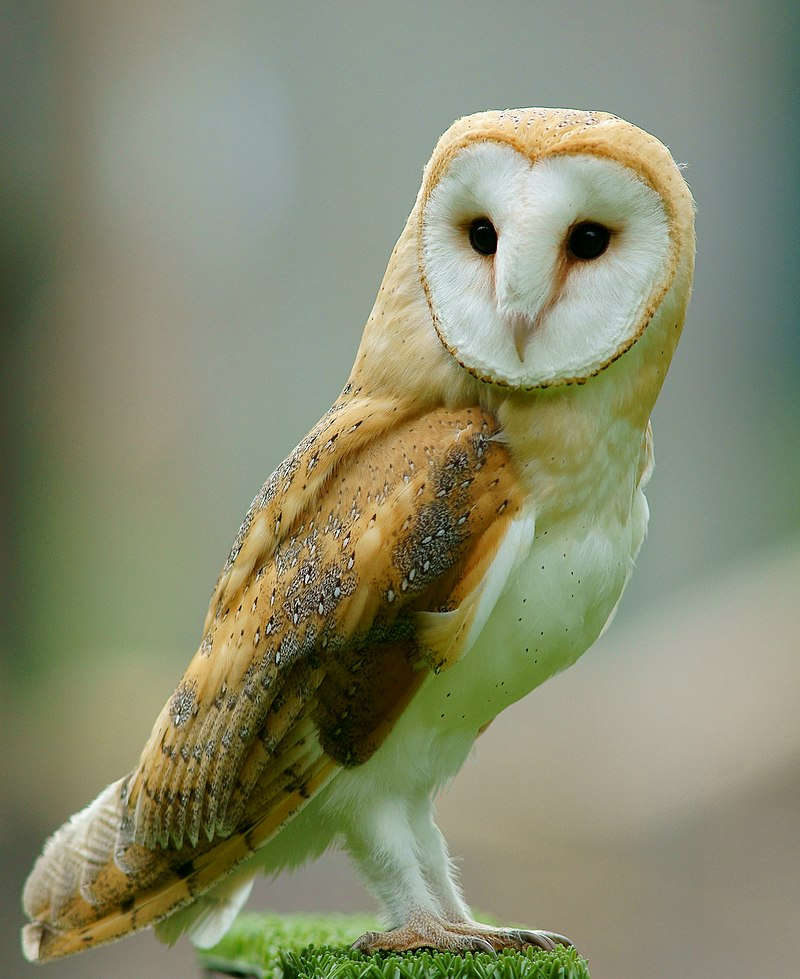
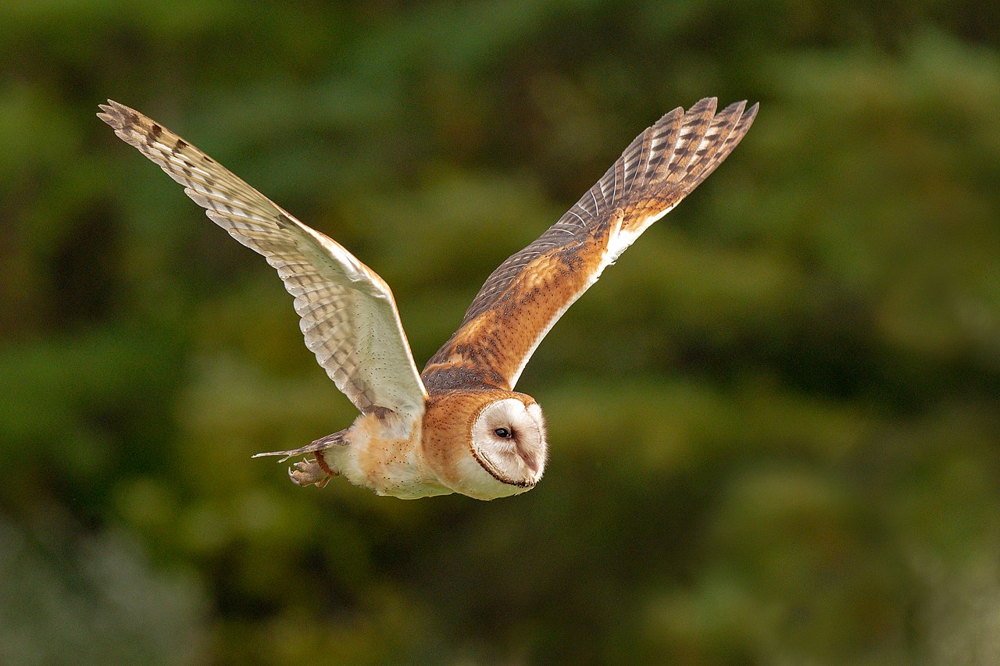

The barn owl (Tyto alba) is the most widely distributed species of owl in the world and one of the most widespread of all species of birds, being found almost everywhere except for the polar and desert regions, Asia north of the Himalayas, most of Indonesia, and some Pacific Islands. It is also known as the common barn owl, to distinguish it from the other species in its family, Tytonidae, which forms one of the two main lineages of living owls, the other being the typical owls (Strigidae).
There are at least three major lineages of barn owl: the western barn owl of Europe, western Asia, and Africa; the eastern barn owl of southeastern Asia and Australasia; and the American barn owl of the Americas. Some taxonomic authorities classify barn owls differently, recognising up to five separate species; and further research needs to be done to resolve the disparate taxonomies. There is considerable variation of size and colour among the approximately 28 subspecies, but most are between 33 and 39 cm (13 and 15 in) in length, with wingspans ranging from 80 to 95 cm (31 to 37 in). The plumage on the head and back is a mottled shade of grey or brown; that on the underparts varies from white to brown and is sometimes speckled with dark markings. The face is characteristically heart-shaped and is white in most subspecies. This owl does not hoot, but utters an eerie, drawn-out screech.
The barn owl is nocturnal over most of its range; but in Great Britain and some Pacific Islands, it also hunts by day. Barn owls specialise in hunting animals on the ground and nearly all of their food consists of small mammals, which they locate by sound, their hearing being very acute. The owls usually mate for life unless one of the pair is killed, whereupon a new pair bond may be formed. Breeding takes place at varying times of the year, according to the locality, with a clutch of eggs, averaging about four in number, being laid in a nest in a hollow tree, old building, or fissure in a cliff. The female does all the incubation, and she and the young chicks are reliant on the male for food. When large numbers of small prey are readily available, barn owl populations can expand rapidly; and globally the bird is considered to be of least conservation concern. Some subspecies with restricted ranges are more threatened.
The barn owl was one of several species of bird first described in 1769 by the Tyrolean physician and naturalist Giovanni Antonio Scopoli in his Anni Historico-Naturales. He gave it the scientific name Strix alba.[2][3] As more species of owl were described, the genus Strix (from the Greek στρίξ, strix, "owl")[4] came to refer solely to the wood owls in the typical-owl family Strigidae; and the barn owl became Tyto alba in the barn-owl family Tytonidae. Tyto alba literally means 'white night owl', from the onomatopoeic Ancient Greek τυτώ (tytō, 'night owl')[5] – compare English "hooter" – and Latin alba, 'white'.
The bird is known by many common names that refer to its appearance, call, habitat, or its eerie, silent flight: white owl,[8] silver owl, demon owl, ghost owl, death owl, night owl, rat owl, church owl, cave owl, stone owl, monkey-faced owl, hissing owl, hobgoblin or hobby owl, dobby owl, white-breasted owl, golden owl, screech owl, straw owl, barnyard owl, and delicate owl.[6][9] "Golden owl" might also refer to the related golden masked owl (T. aurantia). "Hissing owl" and, particularly in the U.K. and in India, "screech owl" refer to the piercing calls of these birds.[10] The latter name is also applied to a different group of birds, the screech-owls in the genus Megascops.
The barn owl is a medium-sized, pale-coloured owl with long wings and a short, squarish tail. There is considerable size variation across the subspecies with a typical specimen measuring about 33 to 39 cm (13 to 15 in) in overall length, with a wingspan of some 80 to 95 cm (31 to 37 in). Adult body mass is also variable with male owls from the Galapagos weighing 260 g (9.2 oz) while male Pacific barn owls average 555 g (19.6 oz). In general, owls living on small islands are smaller and lighter, perhaps because they have a higher dependence on insect prey and need to be more manoeuvrable.[11] The shape of the tail is a means of distinguishing the barn owl from typical owls when seen in the air. Other distinguishing features are the undulating flight pattern and the dangling, feathered legs. The pale face with its heart shape and black eyes give the flying bird a distinctive appearance, like a flat mask with oversized, oblique black eyeslits, the ridge of feathers above the bill somewhat resembling a nose.
The bird's head and upper body typically vary between pale brown and some shade of grey (especially on the forehead and back) in most subspecies. Some are purer, richer brown instead, and all have fine black-and-white speckles except on the remiges and rectrices (main wing feathers), which are light brown with darker bands. The heart-shaped face is usually bright white, but in some subspecies it is brown. The underparts, including the tarsometatarsal (lower leg) feathers, vary from white to reddish buff among the subspecies, and are either mostly unpatterned or bear a varying number of tiny blackish-brown speckles. It has been found that at least in the continental European populations, females with more spotting are healthier than plainer birds. This does not hold true for European males by contrast, where the spotting varies according to subspecies. The bill varies from pale horn to dark buff, corresponding to the general plumage hue, and the iris is blackish brown. The toes, like the bill, vary in colour, ranging from pink to dark pinkish-grey and the talons are black.
Both leucistic and melanistic barn owls have been recorded in the wild and in captivity,[14] with melanistic individuals estimated to occur with odds of 1 out of every 100,000 birds.
On average within any one population, males tend to have fewer spots on the underside and are paler in colour than females. The latter are also larger with a strong female T. alba of a large subspecies weighing over 550 g (19.4 oz), while males are typically about 10% lighter. Nestlings are covered in white down, but the heart-shaped facial disk becomes visible soon after hatching.
Contrary to popular belief, the barn owl does not hoot (such calls are made by typical owls, like the tawny owl or other members of the genus Strix). It instead produces a characteristic piercing shree scream, ear-shattering at close range, an eerie, long-drawn-out shriek. Males in courtship give a shrill twitter. Both young and old can hiss like a snake to scare away intruders. Other sounds produced include a purring chirrup denoting pleasure, and a "kee-yak", which resembles one of the vocalisations of the tawny owl. When captured or cornered, the barn owl throws itself on its back and flails with sharp-taloned feet, making for an effective defence. In such situations it may emit rasping sounds or clicking snaps, produced probably by the bill but possibly by the tongue.
The barn owl is the most widespread landbird species in the world, occurring on every continent except Antarctica.[18] Its range includes all of Europe (except Fennoscandia and Malta), most of Africa apart from the Sahara, the Indian subcontinent, Southeast Asia, Australia, many Pacific Islands, and North-, Central-, and South America.[18] In general, it is considered to be sedentary; and, indeed, many individuals, having taken up residence in a particular location, remain there even when better nearby foraging areas are available. In the British Isles, the young seem largely to disperse along river corridors; and the distance travelled from their natal site averages about 9 km (5.6 mi).
In continental Europe the dispersal distance is greater, commonly somewhere between 50 and 100 kilometres (31 and 62 mi) but exceptionally 1,500 km (932 mi), with ringed birds from the Netherlands ending up in Spain and in Ukraine. In the United States, dispersal is typically over distances of 80 and 320 km (50 and 199 mi), with the most travelled individuals ending up some 1,760 km (1,094 mi) from their points of origin. Dispersal movements in the African continent include 1,000 km (621 mi) from Senegambia to Sierra Leone and up to 579 km (360 mi) within South Africa. In Australia there is some migration as the birds move towards the northern coast in the dry season and southward in the wet season, as well as nomadic movements in association with rodent plagues. Occasionally, some of these birds turn up on Norfolk Island, Lord Howe Island, or New Zealand, showing that crossing the ocean is within their capabilities.[6] In 2008, barn owls were recorded for the first time breeding in New Zealand.[20] The barn owl has been successfully introduced into the Hawaiian island of Kauai in an attempt to control rodents; distressingly, it has been found to also feed on native birds.